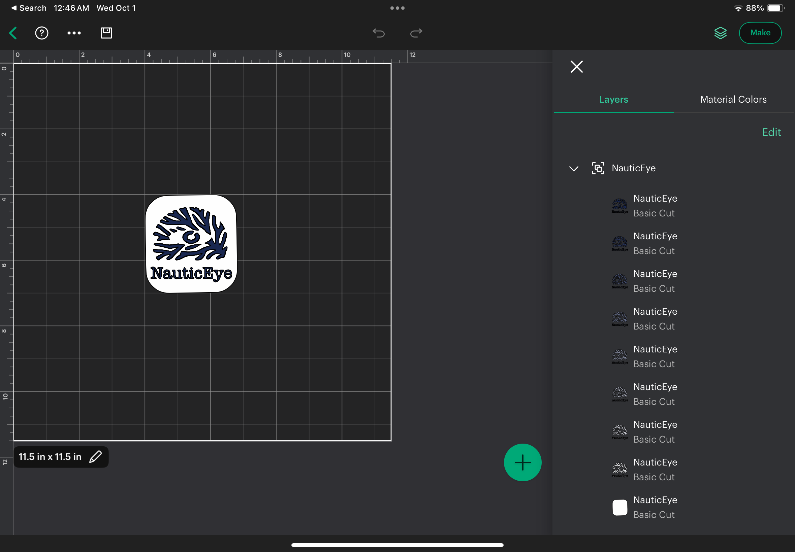

Computer Controlled Cutting
Laser cutting and vinyl cutting experiments, design tests, and final outcomes.
Project Overview
This section documents my process for the computer-controlled cutting assignment. Here I explore softwares(Affinity Designer 2, Cricut Design Space), vector design, and final fabrication results. Material used is vinyl, with machines such as the Cricut vinyl cutter.
Gallery
Spotify logo practice vector design using Affinity Designer 2
Innitial Nauticeye logo design using Affinity Designer 2
Finalize Nauticeye logo design on Affinity Designer 2

Send vector design to Cricut cutting software
Using Cricut to print out design in two parts

Final prototype assembled from laser-cut components.

Final sticker